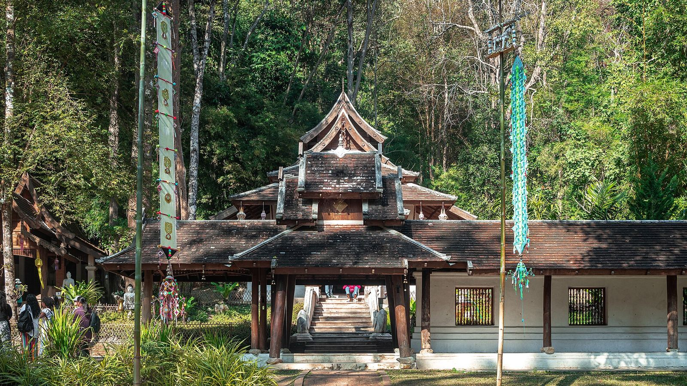

La famiglia reale non si scherza
La legge sulla lesa maestà è fra le più severe al mondo: anche una battuta o un post possono finire in tribunale. Sulle banconote c'è il ritratto del re: non si calpestano, nemmeno per fermarle quando volano via.

I thailandesi sono accoglienti e orgogliosi. Qualche regola qui è legge, qualche altra è educazione: conviene conoscerle tutte prima di atterrare.
Le prime tre sono leggi, e le conseguenze sono serie. Le altre sono il modo per farsi voler bene.
La legge sulla lesa maestà è fra le più severe al mondo: anche una battuta o un post possono finire in tribunale. Sulle banconote c'è il ritratto del re: non si calpestano, nemmeno per fermarle quando volano via.
Sono vietate in tutto il paese, e non solo usarle: anche portarle. Si rischiano multe pesanti e l'arresto, quindi restano a casa. In spiaggia è vietato fumare anche le sigarette normali.
Coralli, conchiglie e pesci non si toccano e non si raccolgono: portarne via è reato, con multe pesanti. Nelle soste di snorkeling a Koh Tao si guarda e basta.
Non si tocca la testa di nessuno, neanche dei bambini. I piedi non si puntano verso le persone o verso il Buddha, e non si appoggiano sui tavoli.
Spalle e ginocchia coperte, scarpe fuori dalle sale, voce bassa. Le donne non toccano i monaci e non porgono loro oggetti direttamente.
Alzare la voce qui fa perdere la faccia soprattutto a chi urla. Un tono gentile, anche quando qualcosa va storto, risolve più di qualsiasi discussione.
In Thailandia i gruppi organizzati devono essere accompagnati per legge da una guida del posto. Gli ingressi a templi e musei li gestisce lei. In giro, niente zaini, badge o gadget con il marchio WeRoad.
Notti, hotel e trasferimenti sono quelli prenotati: modificarli sul posto non è permesso, e il coordinatore non può organizzare servizi in loco. Ogni richiesta va fatta a WeRoad prima di partire.
Per tutto ciò che riguarda la salute valgono il Ministero degli Esteri e il vostro medico, o uno specialista in medicina tropicale. Qui sotto quello che c'è da sapere per il nostro periodo, fine ottobre e inizio novembre.
Dall'Europa non servono vaccinazioni per entrare. È raccomandata una buona copertura contro l'epatite A. La febbre gialla serve solo a chi è stato di recente in una zona a rischio: la Thailandia non lo è.
Per i vaccini consigliati ma non obbligatori: il vostro medico o centro vaccinale, il sito del CDC e la «Situazione sanitaria» su Viaggiare Sicuri.
Al nord e a Bangkok la stagione delle piogge è appena finita, ma sulle isole del Golfo novembre è il mese più piovoso: lì le zanzare sono di più, e con loro il rischio di malattie. Attenzione anche nella giornata in giungla del Day 5.
Ci si protegge di giorno e di sera: repellente (consigliato un tropicale, tipo Autan Tropical) e vestiti lunghi di colore chiaro, soprattutto all'alba e al tramonto.
L'acqua del rubinetto non è potabile: quella in bottiglia si usa anche per lavarsi i denti. Il ghiaccio di solito è industriale e sicuro. Evitate frutta e verdura non lavate e preferite i piatti appena cucinati: lo street food servito caldo è di solito sicuro.
Alcuni hanno bisogno di qualche giorno per adattarsi alla cucina thai. Prendere dei probiotici nei giorni prima della partenza aiuta la digestione e rende il passaggio più morbido.
Il viaggio include un'assicurazione sanitaria per tutta la durata, spostamenti interni e voli del pacchetto compresi. Non copre i voli dall'Italia prenotati da soli, né i giorni prima del Day 1 o dopo il Day 13.
Conviene un'assicurazione integrativa. Alcune carte di credito includono già un'assicurazione sanitaria internazionale: controllate le condizioni, a volte vale solo se il viaggio è pagato con quella carta. Revolut, per esempio, la include nei piani a pagamento (Premium, Metal e Ultra).
Le truffe per turisti a Bangkok sono vecchie e ripetitive. Riconoscerle basta a evitarle.
Oggi il Grand Palace è chiuso
Uno sconosciuto molto gentile, spesso vicino all'ingresso, spiega che il palazzo è chiuso per una cerimonia e propone un giro alternativo in tuk tuk. Il palazzo è aperto.
Si va dritti all'ingresso ufficiale e si controlla di persona.
Giro in tuk tuk, 20 baht
Il prezzo è basso perché il giro prevede soste in gioiellerie e sartorie che pagano una commissione all'autista.
Prezzo e destinazione si fissano prima di salire. Nessuna sosta.
Il tassametro è rotto
Il taxi propone un prezzo fisso, sempre più alto di quello che segnerebbe il tassametro.
Si chiede il meter prima di salire, oppure si prenota con Grab o Bolt.
In macchina lì non ci si arriva
Verso mercati e canali fuori città il tassista giura che la strada è impraticabile e propone la barca di un amico, a prezzo gonfiato.
Le barche si noleggiano solo ai punti ufficiali.
Nessuno si aspetta che parliate thai. Proprio per questo, un grazie detto nella loro lingua fa sorridere chiunque.
Gli uomini chiudono le frasi con khrap, le donne con kha: è il modo di essere educati.
No: per un soggiorno turistico come il nostro gli italiani entrano senza visto. Serve il passaporto con almeno sei mesi di validità residua, quindi valido almeno fino a maggio 2027.
Le regole d'ingresso cambiano spesso: a ridosso della partenza date un'occhiata alla scheda Thailandia su Viaggiare Sicuri.
È il modulo d'arrivo digitale, obbligatorio. Si compila online nelle 72 ore prima dell'arrivo: chi atterra il 31 ottobre può farlo dal 28. È gratuito, sul sito ufficiale dell'immigrazione thailandese.
Alla fine arriva un'email di conferma: tenetela sul telefono. Ci sono siti che imitano quello ufficiale e chiedono soldi: ignorateli.
Soprattutto contanti. Mercati, street food, tuk tuk e mance si pagano in baht. Ogni prelievo al bancomat costa circa 220 baht (6 €) di commissione qualunque sia la cifra, quindi conviene prelevare poche volte e bene, oppure portare euro e cambiarli in città.
La carta funziona di solito senza problemi a Bangkok, Chiang Mai e nelle zone turistiche (ristoranti, 7-Eleven, negozi più grandi). Sulle isole e nei piccoli locali tipici, invece, meglio avere sempre contanti a sufficienza.
Alcuni hotel chiedono una cauzione al check-in, che viene restituita alla partenza.
Più o meno 37,5 baht per un euro: è il cambio che usiamo sul sito per le conversioni, ma controllate quello del giorno. Quando il bancomat o il POS propongono di addebitare in euro, rifiutate e pagate in baht: il loro cambio è quasi sempre peggiore.
Con Grab, da scaricare prima di partire: prezzo chiaro prima di salire, niente trattative. Bolt spesso costa meno. I taxi normali vanno bene solo col tassametro acceso. Il tuk tuk è un'esperienza da fare almeno una volta, ma il prezzo si fissa prima.
Il wi-fi c'è quasi ovunque. Per essere connessi dall'atterraggio la cosa più comoda è una eSIM comprata online prima di partire (per esempio Airalo): costa un po' di più ma funziona appena si accende il telefono. Per 15 giorni si spendono circa 15-25 €.
In alternativa, una SIM thai di AIS, TrueMove H o dtac: si compra in aeroporto, in qualsiasi 7-Eleven o nei negozi degli operatori.
Quasi sempre no, se il caricatore ha la spina europea piccola a due poli: entra nella maggior parte delle prese thai. La spina italiana grande a tre poli e la Schuko invece spesso non entrano, quindi un adattatore universale in valigia è una buona idea. La tensione è 220 V, come da noi.
No, l'acqua del rubinetto non è sicura da bere: si usa quella in bottiglia, che costa pochissimo (0,30-0,80 €), anche per lavarsi i denti. Il ghiaccio invece di solito è prodotto industrialmente, spesso si riconosce dal foro al centro del cubetto, ed è sicuro.
Spesso sì, e il «poco piccante» thai non è il nostro. Imparate mai phet (non piccante) prima di ordinare. Per lo street food la regola è semplice: bancarelle con tanti thai in fila e cibo cotto davanti a voi. Acqua solo in bottiglia.
Due climi diversi. Al nord è l'inizio della stagione fresca e secca: caldo di giorno, sera fresca in collina, soprattutto in homestay. Bangkok resta calda e umida.
Sulle isole del Golfo invece novembre è il mese più piovoso dell'anno: acquazzoni forti, spesso brevi, e mare che può agitarsi. Le uscite in barca dipendono dal meteo, e il k-way non è facoltativo.
Il Day 9 si parte presto in barca da Koh Phangan: visita a Koh Nang Yuan, pranzo a buffet thailandese a bordo e, nel pomeriggio, tre soste di snorkeling (Hin Wong Bay, Ao Luek, Shark Bay). La sera si sbarca al molo di Mae Haad e si dorme in hotel a Koh Tao.
Il Day 10 la mattina è libera e alle 15:30 si riparte: alle 16:45 si è di nuovo in hotel a Koh Phangan. Tutto nell'itinerario.
No. La festa si tiene di solito nella notte di luna piena, e a novembre la luna piena cade il 24: noi saremo già a casa. Lo stesso vale per Loy Krathong e Yi Peng, la festa delle lanterne, che quest'anno è fra il 23 e il 25 novembre.
In compenso a Koh Phangan saremo in luna nuova: se il cielo è sgombro, le stelle sul mare si vedono come in pochi altri posti. Sull'isola le feste ci sono comunque ogni settimana.
Molto rurale ed essenziale, bagno compreso: è parte dell'esperienza. Mr. Tong non parla inglese. Asciugamani e coperte ci sono, il sapone no: portate bagnoschiuma e shampoo. Il sacco lenzuolo e una torcia non sono obbligatori, ma conviene averli. La cena con la famiglia è inclusa, con acqua e birra a testa.
Sette attività: il tuk tuk tour di Ayutthaya (30 €), il giro in bici a Sukhothai (15 €) e le cinque del pacchetto «Spiagge e templi», cioè SkyWalk al tramonto, cena Khantoke, Muay Thai a bordo ring, giro delle spiagge a Koh Phangan e tour di Bangkok (175 €). In tutto 220 € a testa, quanto la cassa, che copre solo le attività: le mance ad autisti e guide si versano a parte. Il dettaglio è nella pagina cassa.
Nello zaino da tenere con sé: spazzolino, una felpa (l'aria condizionata a bordo è forte), tappi per le orecchie, qualcosa da mangiare e il powerbank. Si arriva a Bangkok verso le 7 del mattino. Se il treno è pieno, al suo posto c'è un bus notturno.
Non è obbligatoria, ma è apprezzata, soprattutto nei servizi. Al ristorante si lascia circa il 10%, se il servizio non è già nel conto. Al bar o dopo un massaggio bastano piccole somme, 5-20 baht.
Per guide e autisti di solito si danno 10-15 € al giorno per gruppo: non sono nella cassa comune, che copre solo le attività: ognuno di noi verserà anche la sua parte.
Sì, ma le notti prima del Day 1 e dopo il Day 13 si prenotano in autonomia. Dentro le date del viaggio invece hotel, notti e trasferimenti non si possono cambiare sul posto: eventuali richieste vanno fatte a WeRoad prima della partenza.